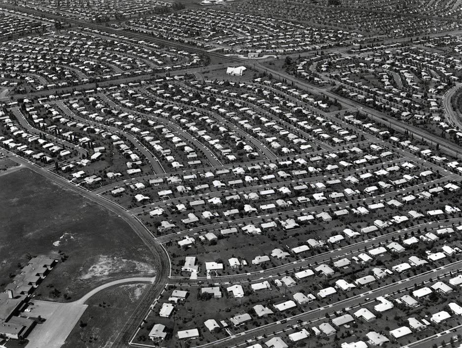

부동산의 역사 — 땅과 집이 재산이 되기까지The History of Real Estate — How Land and Homes Became Wealth
- 부동산은 땅과 그 위의 건물이고, 많은 가정의 가장 큰 재산입니다.Real estate is land and the buildings on it, the biggest asset for many families.
- 대출(빚)과 금리가 부동산 값에 아주 큰 영향을 줍니다.Loans (debt) and interest rates strongly affect property prices.
- 부동산도 거품과 붕괴를 겪었고, 우리나라에는 전세라는 독특한 제도가 있습니다.Real estate has had bubbles and crashes too, and Korea has a unique system called jeonse.
피아노를 운반하다 보면 엘리베이터 없는 오래된 빌라부터 새 아파트까지 온갖 집에 가 봅니다. 사람들 대화에서 가장 자주 나오는 경제 이야기도 집값입니다. 땅과 집이 어떻게 이렇게 중요한 재산이 되었는지 살펴봅니다.
Moving pianos, I visit all kinds of homes, from old walk-up villas to new apartments. The economic topic people talk about most is housing prices. Let's see how land and homes became such important assets.1. 땅을 '소유'한다는 생각
1. The idea of "owning" land농사를 짓기 시작하면서 땅은 먹고사는 기반이 되었습니다. 오랫동안 땅은 왕과 귀족의 것이었고, 농민은 빌려 쓰는 경우가 많았습니다. 근대에 들어 개인이 땅을 사고팔고 등기로 소유를 증명하는 제도가 자리 잡으면서 부동산 시장이 생겼습니다.When farming began, land became the base of life. For a long time land belonged to kings and nobles, and farmers often rented it. In modern times, people could buy and sell land and prove ownership by registration, creating a property market.
2. 주택담보대출 — 빚으로 집을 사다
2. Mortgages — buying homes with debt집은 비싸서 대부분 은행 대출로 삽니다. 집을 담보로 맡기고 오랜 기간 나눠 갚는 것이 주택담보대출(모기지)입니다. 금리가 낮으면 같은 월급으로 더 큰 돈을 빌릴 수 있어 집값이 오르기 쉽고, 금리가 오르면 반대가 됩니다. 그래서 부동산은 금리에 아주 민감합니다.Homes are expensive, so most are bought with bank loans. A mortgage uses the home as collateral and is repaid over many years. Low rates let people borrow more on the same salary, so prices tend to rise; higher rates do the opposite. That makes property very sensitive to interest rates.
3. 레빗타운과 교외 주택의 시대
3. Levittown and the age of suburbs제2차 세계대전 뒤 미국에서는 돌아온 군인 가족을 위한 집이 많이 필요했습니다. 1947년부터 레빗 형제는 공장에서 물건 찍듯 같은 모양의 집을 빠르게 지은 레빗타운을 만들었고, 정부 보증 대출과 함께 '내 집 마련'이 중산층의 꿈이 되었습니다.After World War II, the US needed many homes for returning soldiers. From 1947, the Levitt brothers built Levittown, mass-producing identical houses like a factory. With government-backed loans, owning a home became the middle-class dream.

4. 일본의 부동산 거품
4. Japan's real estate bubble1980년대 후반 일본은 낮은 금리와 넘치는 돈으로 땅값과 주가가 함께 치솟았습니다. "도쿄 땅을 팔면 미국 전체를 살 수 있다"는 말까지 나왔다고 합니다. 1990년 무렵 금리 인상과 대출 규제로 거품이 꺼지자 땅값은 오랫동안 떨어졌고, 일본은 긴 침체를 겪었습니다.In the late 1980s, low rates and abundant money pushed Japan's land and stock prices up together. People even said selling Tokyo could buy all of America. Around 1990, rate hikes and loan limits burst the bubble; land prices fell for many years and Japan entered a long slump.
5. 2008년 서브프라임 위기
5. The 2008 subprime crisis2000년대 미국에서는 갚을 능력이 부족한 사람(서브프라임)에게도 대출이 쉽게 나갔고, 그 대출을 묶은 금융상품이 전 세계에 팔렸습니다. 집값이 내려가자 연체가 쏟아져 2008년 세계 금융위기로 번졌습니다. 부동산 문제가 은행과 세계 경제 전체를 흔들 수 있다는 것을 보여 주었습니다.In the 2000s, US lenders gave loans even to weak borrowers (subprime), and products bundling those loans were sold worldwide. When home prices fell, defaults poured in and became the 2008 global crisis. It showed that real estate can shake banks and the whole world economy.
6. 우리나라 — 강남 개발, 신도시, 아파트
6. Korea — Gangnam, new towns and apartments1970년대 강남 개발과 함께 아파트 단지가 빠르게 늘었습니다. 1989년 정부는 주택 200만 호 건설 계획을 발표했고 분당, 일산 같은 1기 신도시가 만들어졌습니다. 지금 우리나라 사람 절반 이상이 아파트에 산다는 통계가 있을 만큼 아파트는 대표 주거 형태가 되었습니다.With Gangnam development in the 1970s, apartment complexes spread fast. In 1989 the government announced a plan for 2 million homes, creating first-generation new towns like Bundang and Ilsan. Today over half of Koreans live in apartments, making them the main type of housing.
7. 전세 — 세계에서 보기 드문 제도
7. Jeonse — a rare system in the world전세는 집주인에게 큰 보증금을 맡기고 월세 없이 살다가 나갈 때 돌려받는 방식입니다. 집주인은 그 돈을 굴리거나 다른 집을 사는 데 쓰기도 합니다. 금리가 높을 때와 집값이 내릴 때 보증금을 돌려받지 못하는 '전세 사기·역전세' 문제가 생기기도 해서, 계약 전 등기부등본과 보증보험 확인이 중요합니다.With jeonse, a tenant gives the owner a large deposit, pays no monthly rent, and gets it back when leaving. Owners may invest the money or buy other homes. When rates rise or prices fall, tenants may not get deposits back, so checking the property register and deposit insurance before signing is important.
8. 조율사의 생각
8. A tuner's thought피아노는 놓인 방에 따라 소리가 달라집니다. 부동산도 같은 집이라도 위치, 교통, 학교, 그리고 그 시대의 금리라는 '방의 울림'에 따라 값이 달라집니다. 집은 사는 곳이면서 재산이라, 무리한 빚보다 내 형편에 맞는 조율이 가장 중요하다고 생각합니다.A piano sounds different in each room. A home's price also changes with location, transport, schools and the "room acoustics" of the era's interest rates. A home is both a place to live and an asset, so tuning to your budget matters more than heavy debt.
📘 오늘의 영어 단어
📘 Today's English words| 영어 | 발음 | 뜻 |
|---|---|---|
| real estate | 리얼 이스테이트 | 부동산 |
| property | 프라퍼티 | 재산, 부동산 |
| mortgage | 모기지 | 주택담보대출 |
| collateral | 컬래터럴 | 담보 |
| down payment | 다운 페이먼트 | 계약금, 선납금 |
| rent | 렌트 | 월세, 임대료 |
| deposit | 디파짓 | 보증금 |
| suburb | 서버브 | 교외 |
| housing price | 하우징 프라이스 | 집값 |
| subprime | 서브프라임 | 저신용(대출) |
쉬운 예문
- Most people buy a home with a mortgage.
대부분의 사람은 주택담보대출로 집을 삽니다. - Lower rates let people borrow more.
금리가 낮으면 더 많이 빌릴 수 있습니다. - Always check if your deposit is safe.
보증금이 안전한지 꼭 확인하세요.
🔊 버튼을 누르면 브라우저에 들어 있는 음성으로 영어를 읽어 줍니다(기기에 따라 안 될 수 있어요).
자주 묻는 질문
Frequently asked questions금리가 오르면 집값은 꼭 내리나요?Do home prices always fall when rates rise?
대체로 부담이 커져 내리는 압력이 생기지만, 공급 부족, 정책, 지역 사정에 따라 다르게 움직이기도 합니다.There is usually downward pressure, but supply shortages, policy and local conditions can make them move differently.
전세와 월세 중 무엇이 좋은가요?Which is better, jeonse or monthly rent?
금리, 보증금 안전성, 내 현금 사정에 따라 다릅니다. 전세는 보증금을 돌려받을 수 있는지(선순위 대출, 보증보험) 꼭 확인해야 합니다.It depends on rates, deposit safety and your cash. With jeonse, always check whether the deposit is safe (senior loans, deposit insurance).
부동산도 거품이 있나요?Can real estate have bubbles?
네. 일본 1990년, 미국 2006~2008년처럼 빚과 기대가 함께 부풀면 거품이 생기고, 꺼질 때 경제 전체가 큰 충격을 받습니다.Yes. Like Japan in 1990 and the US in 2006–2008, when debt and expectations swell together a bubble forms, and its burst shocks the whole economy.
※ 이 글은 투자 권유가 아닌 공부 자료입니다.※ This page is study material, not investment advice. 숫자와 연도는 널리 알려진 역사 자료를 바탕으로 쉽게 정리했으며, 실제 투자 판단은 본인 책임입니다. 사진 출처: LevittownPA.jpg (퍼블릭 도메인). 그림과 움직이는 그림은 직접 만들었습니다. · 📞 010-8756-8740